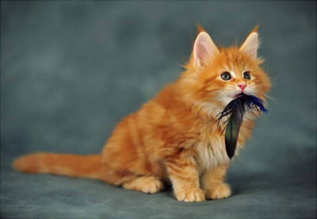
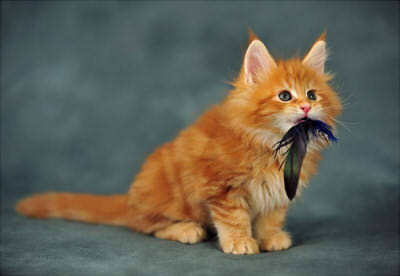

Страна происхождения
США
Тип шерсти
Длинношёрстная
Рост
30–40 см в холке, 1 м в длину
Вес
4–10 кг
Возраст
12–15 лет
История происхождения
Предками мейн-кунов были большие коты, обитавшие в северных штатах США. Эти животные были естественной популяцией в этих местах, а их одомашнивание и разведение началось более 250 лет тому назад. «Maine coon» переводится с английского как «мэнский енот», поэтому мейн-кунов также называют мэнской енотовой кошкой. Благодаря сходству этих животных с енотами даже появилось несколько легенд об их происхождении. Кто-то уверен, что предками мейн-кунов был обычный домашний кот и самка енота. И именно от дикого зверя коты унаследовали свой шикарный пышный полосатый хвост. Другие доказывают, что мейн-куны произошли из-за скрещивания домашних котов расцветки табби с североамериканской рысью. Кисточки на ушах мейн-кунов служат этой теории доказательством. Правда, генетики с легкостью разбивают обе эти теории - мейн-куны естественная популяция американской кошачьей метрополии. Первоначально этих кошек использовали как крысоловов на фермах, даже иногда брали для этой цели и на корабли в те времена, часто страдавшие от нашествия грызунов.
Описание
Мейн-кун - это крупнейшая порода кошек в мире. Тело мощное, прямоугольное, с широкой грудной клеткой и массивной головой. Свой рост эти животные заканчивают только в 3-5 лет, хотя самой медленно взрослеющей породой их назвать нельзя. Отличительной особенностью экстерьера стоит назвать кисточки на ушах, напоминающие о рысях, и огромный пушистый «енотовый» хвост. Кошки значительно мельче котов не только во взрослом возрасте, но и при рождении. В среднем разница в весе между самками и самцами составляет четверть. Шерсть мейн-кунов подвержена сезонным изменениям, как и у многих аборигенных пород. Летом она менее густая и короткая, в то время как зимой превращается в шикарную шубу. Хвост у шапендуа достаточно длинный, обычно низко опущен. Шерсть собаки является одной из отличительных черт. Густые «космы» шапендуа делают эту собаку похожей на косматого медвежонка. Волосы достаточно жесткие, немного волнистые. Подшерсток очень густой. В некоторых местах длина шерсти может достигать 7 см.
Характер
Несмотря на свой суровый вид, мейн-куны очень общительные и ласковые животные. Они очень привязаны к своим хозяевам, при этом совершенно ненавязчивы и спокойно переносят одиночество. Кошки отлично ладят с детьми, принимая участие в их активных играх и не проявляя агрессии, если те будут теребить их и дергать за хвост. Неплохо кошки уживаются и с другими домашними животными, за исключением мелких птиц и грызунов. Охотничий инстинкт у них сильно развит, поэтому мейн-кун с удовольствием запустит свою когтистую лапку в аквариум за рыбкой или попытается достать хомячка из клетки. Как и все кошки, мейн-куны обожают подвижные игры, особенно, если нужно за кем-то охотиться или гоняться, так что позаботьтесь о том, чтобы вашему питомцу не было скучно. Идеально заводить мейн-куна, живя в частном доме, во дворе которого кошка может погулять и поохотиться. Но если вы живете в квартире, почаще выгуливайте своего любимца на поводке. Также не забывайте закрывать окно, ведь кошки очень любопытны и могут вывалиться с высоты, заглядевшись на голубя на карнизе.
Уход
Основная проблема многих владельцев кошек — организация специальных мест, где их питомцы могут поточить когти. Часто кошки используют для этих целей обои, мягкую мебель или другие предметы интерьера — в общем, все то, что, по мнению хозяев, использовать в качестве когтеточки нельзя. С мейн-кунами проблема не отступает, но приобретает новое звучание. Кошки этой породы точат когти не в вертикальном положении, как обычно, а в горизонтальном. То есть в данном случае страдают ковры, паласы и другие напольные покрытия. Эти кошки любят воду и с удовольствием купаются. Поэтому с мытьём, как правило, у хозяев проблем не возникает. Множество опасений обычно связано с уходом за шерстью мейн-кунов — она достаточно густая и длинная. Но при этом она не скатывается в колтуны и не сваливается, ее не нужно вычёсывать по несколько часов ежедневно. Одного раза в неделю будет достаточно. Но в дополнение к обычной расческе следует приобрести пуходерку — у кошек этой породы очень густой подшерсток, который нуждается во внимании.